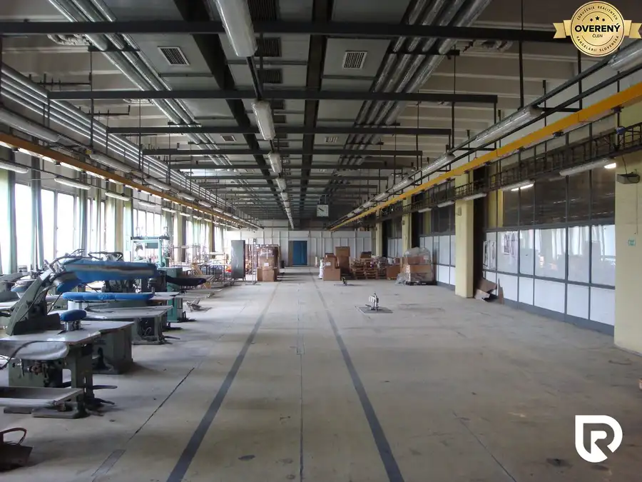
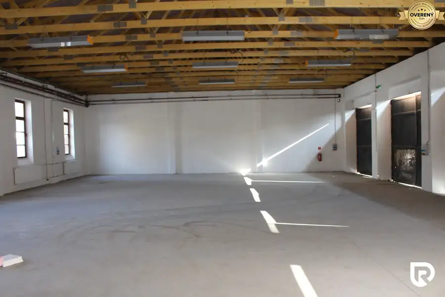
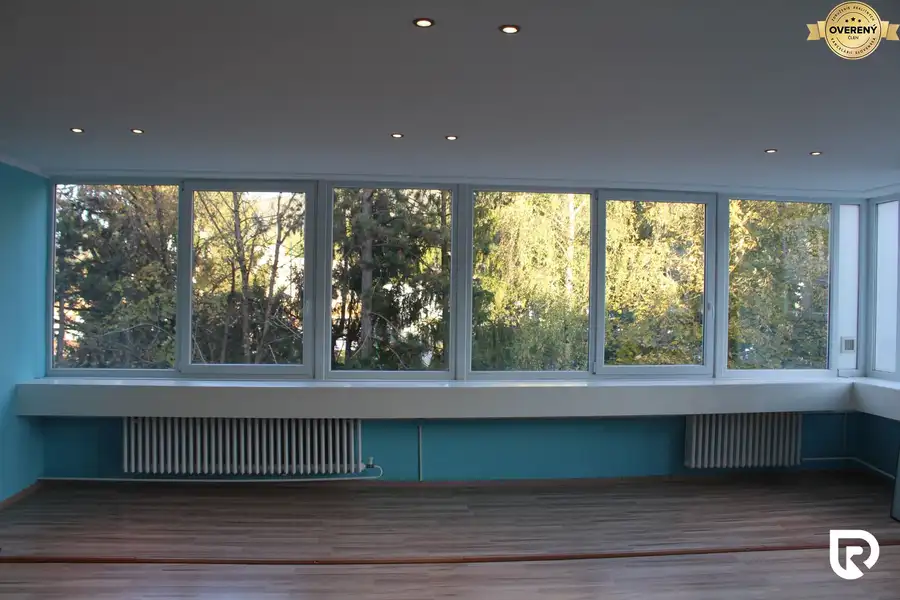
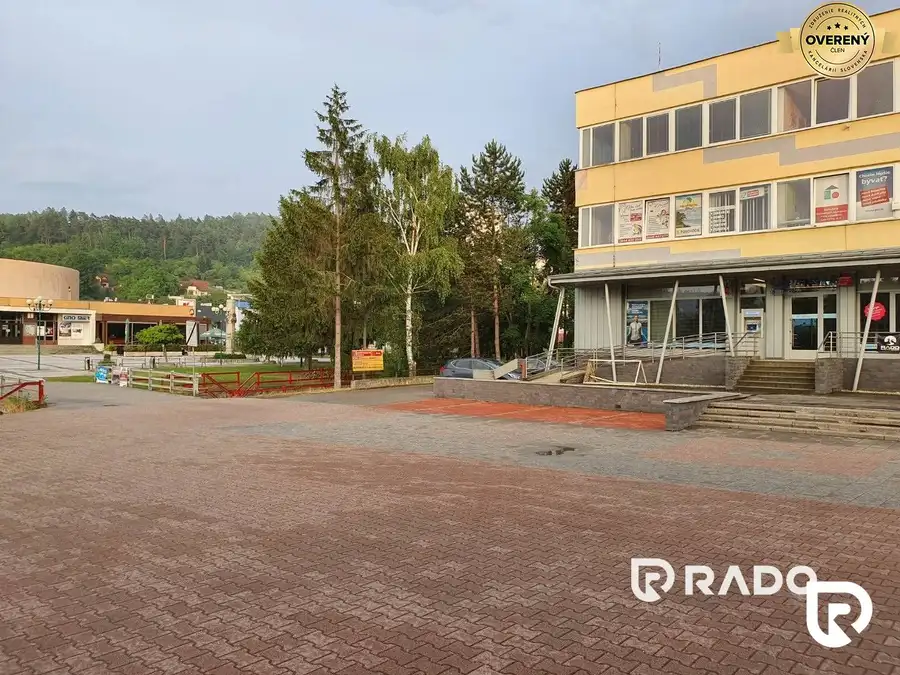
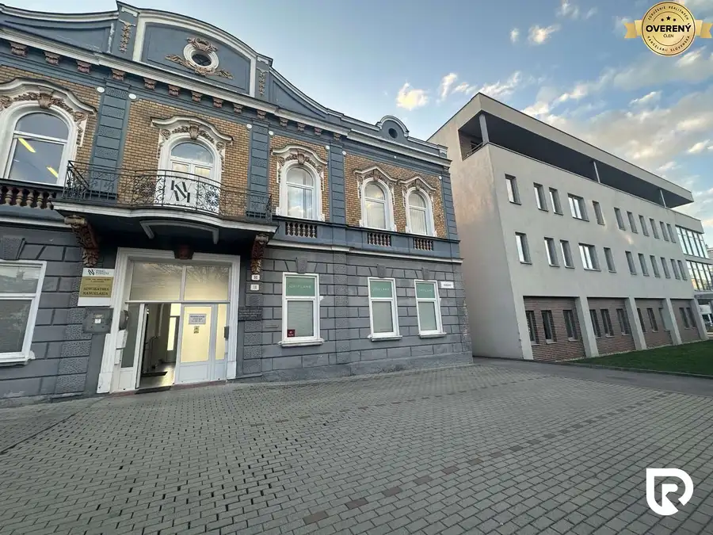
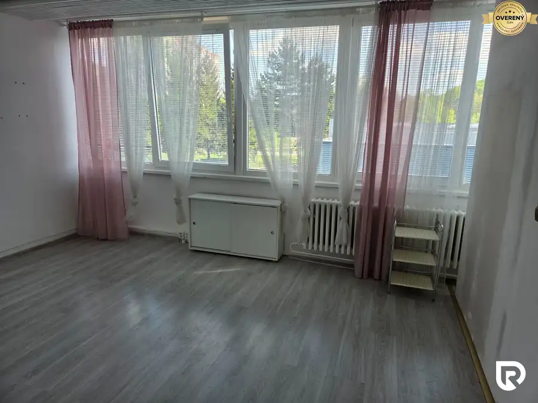
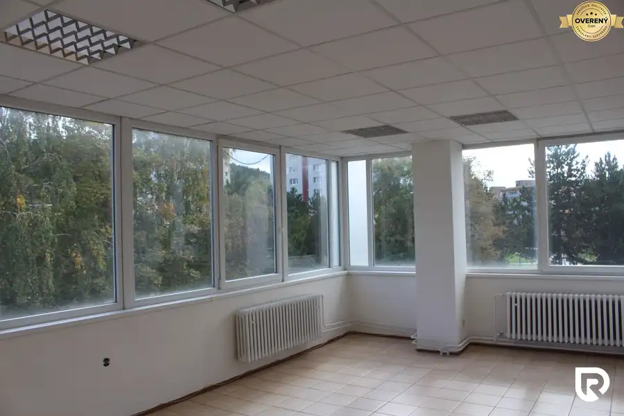
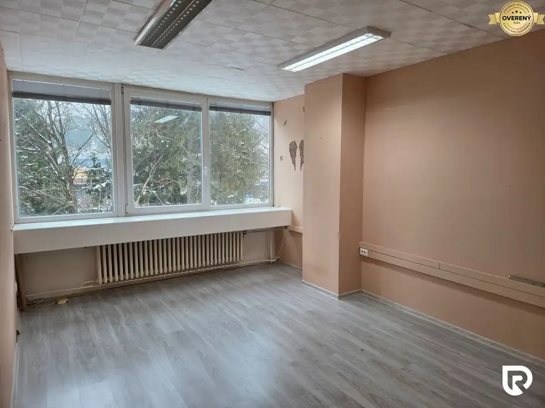
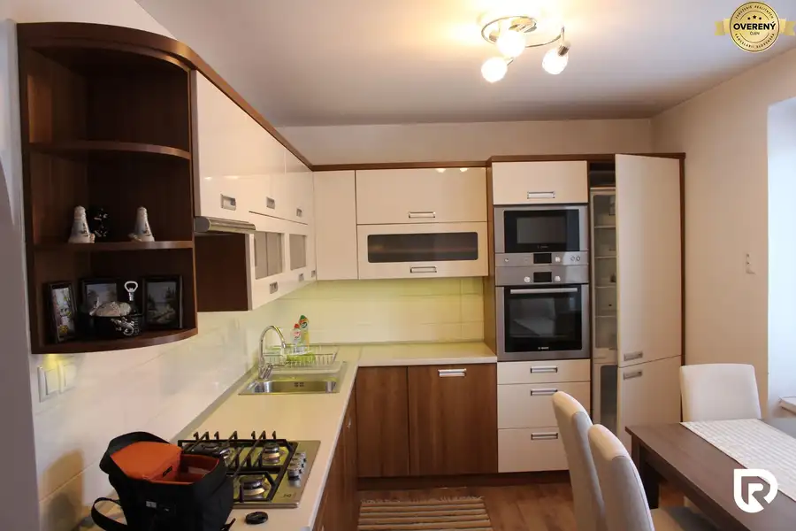

Aktuálna ponuka
Nehnuteľnosti, ktoré ponúkam
9 nehnuteľností na predaj a prenájom. Vyberte typ, alebo napíšte lokalitu.
9 z 9 ponúk

Nebytové priestory4 1 650 €Na prenájom výrobno/skladový objekt, 520 m2 , Púchov Púchov 520 m²2. podlažie RADO Reality ponúka na prenájom výrobno/skladový objekt, 520 m2 v Púchove. Areál závodu sa nachádza v tesnej blízkosti diaľničného privádzača…
Nebytové priestory6 2 000 €Na prenájom výrobno/skladový objekt, 300 m2 v Púchove Púchov 350 m² RADO Reality ponúka na prenájom výrobno/skladový objekt, 300 m2 v Púchove. Areál závodu sa nachádza v tesnej blízkosti diaľničného privádzača…
Nebytové priestory4 Cena dohodouNa prenájom obchodné a kancelárske priestory, 62 m2 Považská Bystrica 62 m²1. podlažie RADO Reality ponúka na dlhodobý prenájom obchodný priestor o rozlohe 62 m2, v administratívnej budove Centrum 18/23 v priamom centre Považskej…
Domy a budovy7 Cena dohodouNa prenájom obchodný priestor o rozlohe 77 m2, v administratívn Považská Bystrica 77 m²1. podlažie RADO Reality ponúka na dlhodobý prenájom obchodný priestor o rozlohe 77 m2, v administratívnej budove Centrum 18/23 v priamom centre Považskej…
Nebytové priestory6 Cena dohodouReality ponúka na prenájom priestor o rozlohe 64 m2 v Žiline. Žilina 64 m² RADO Reality ponúka na dlhodobý prenájom obchodný priestor o rozlohe 64 m2, v administratívnej budove v centre Žiliny. Priestor je na prízemí a…
Nebytové priestory4 Cena dohodouNa prenájom administratívny priestor, 20 m2, Považská Bystrica Považská Bystrica 20 m²1. podlažie RADO Reality ponúka na dlhodobý prenájom obchodný priestor o rozlohe 20 m2, v administratívnej budove Centrum 18/23 v priamom centre Považskej…
Nebytové priestory6 Cena dohodouNa prenájom administratívny priestor, 57 m2, Považská Bystrica Považská Bystrica 57 m²1. podlažie RADO Reality ponúka na dlhodobý prenájom obchodný priestor o rozlohe 57 m2, v administratívnej budove Centrum 18/23 v priamom centre Považskej…
Nebytové priestory3 Cena dohodouNa prenájom administratívny priestor, 62 m2, Považská Bystrica Považská Bystrica 62 m²1. podlažie RADO Reality ponúka na dlhodobý prenájom obchodný priestor o rozlohe 62 m2, v administratívnej budove Centrum 18/23 v priamom centre Považskej…
Byt8 Cena dohodouNa prenájom 2-izbový byt v Považskej Bystrici Považská Bystrica 2-izbový60 m²3. podlažie RADO Reality ponúka na prenájom 2-izbový byt na Dukelskej ulici v Považskej Bystrici. Byt s výmerou 60 m² sa nachádza na 3. poschodí z tehlovom…Tomuto výberu zatiaľ nezodpovedá žiadna ponuka. Napíšte mi, čo hľadáte.